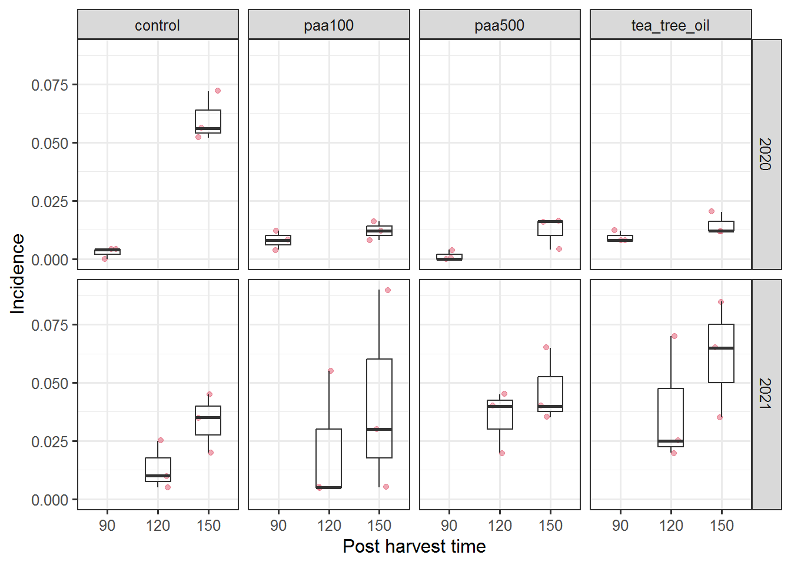
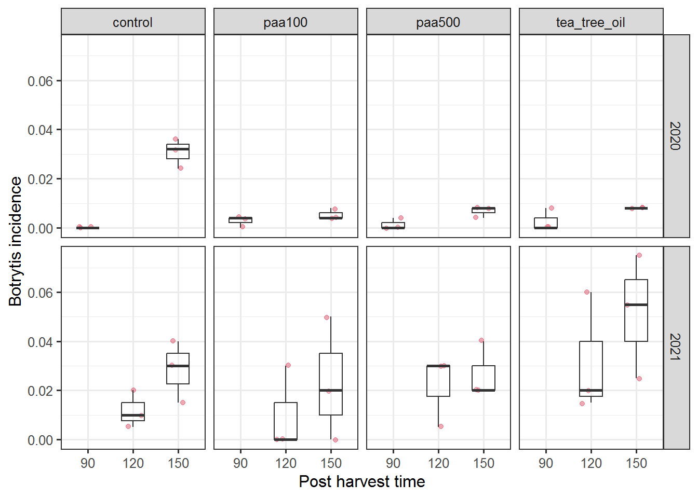
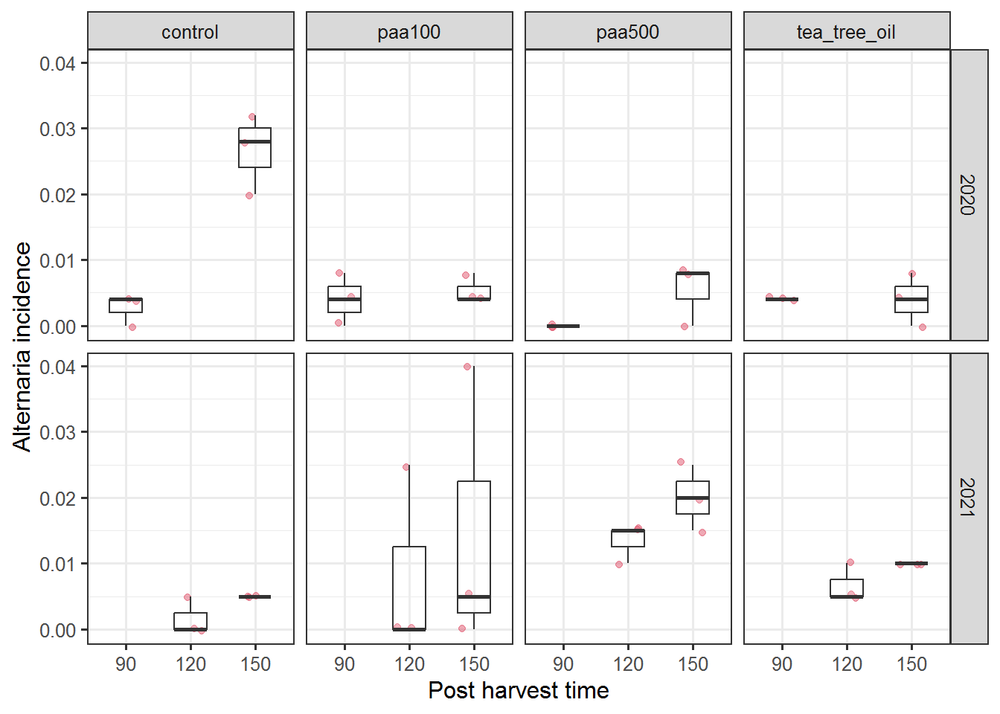

pacman::p_load(
tidyverse,
rio,
janitor,
lme4,
DHARMa,
emmeans,
multcomp,
sjPlot,
ggeffects,
ggplot2,
)
conflicted::conflict_prefer("filter", "dplyr")
conflicted::conflict_prefer("select", "dplyr")
theme_set(theme_bw(base_size=12))Control de patógenos de post cosecha en pera
Carga de datos
datos <- rio::import("data/pera.csv") %>%
mutate_at(vars(year,time), as.factor) datos %>% str'data.frame': 48 obs. of 8 variables:
$ treatment : chr "control" "control" "control" "paa100" ...
$ year : Factor w/ 2 levels "2020","2021": 1 1 1 1 1 1 1 1 1 1 ...
$ time : Factor w/ 3 levels "90","120","150": 1 1 1 1 1 1 1 1 1 1 ...
$ total_roots: int 1 1 0 2 1 3 1 0 0 2 ...
$ botrytis : int 0 0 0 1 0 1 1 0 0 0 ...
$ alternaria : int 1 1 0 1 0 2 0 0 0 1 ...
$ penicilium : int 0 0 0 0 1 0 0 0 0 1 ...
$ n : int 250 250 250 250 250 250 250 250 250 250 ...Gráficos de exploración
Podredumbres totales
datos %>%
ggplot() +
aes(x=time, y=total_roots/n) +
geom_jitter(width=.2, col=2, alpha=.5) +
geom_boxplot(width=.5, alpha=.1) +
labs(x="Post harvest time",
y="Incidence") +
facet_grid(year~treatment)
Podredumbres por Botrytis
datos %>%
ggplot() +
aes(x=time, y=botrytis/n) +
geom_jitter(width=.2, col=2, alpha=.5) +
geom_boxplot(width=.5, alpha=.1) +
labs(x="Post harvest time",
y="Botrytis incidence") +
facet_grid(year~treatment)
Podredumbres por Alternaria
datos %>%
ggplot() +
aes(x=time, y=alternaria/n) +
geom_jitter(width=.2, col=2, alpha=.5) +
geom_boxplot(width=.5, alpha=.1) +
labs(x="Post harvest time",
y="Alternaria incidence") +
facet_grid(year~treatment)
Podredumbres por Penicilium
datos %>%
ggplot() +
aes(x=time, y=penicilium/n) +
geom_jitter(width=.2, col=2, alpha=.5) +
geom_boxplot(width=.5, alpha=.1) +
labs(x="Post harvest time)",
y="Penicilium incidence") +
facet_grid(year~treatment)Modelación
modelo 1: efecto tratamiento. Año y tiempo como aleatorios
mod1 <- glmer(cbind(total_roots, n-total_roots) ~ treatment + (1|year/time),
family="binomial",
data= datos)boundary (singular) fit: see help('isSingular')summary(mod1)Generalized linear mixed model fit by maximum likelihood (Laplace
Approximation) [glmerMod]
Family: binomial ( logit )
Formula: cbind(total_roots, n - total_roots) ~ treatment + (1 | year/time)
Data: datos
AIC BIC logLik deviance df.resid
303.8 315.0 -145.9 291.8 42
Scaled residuals:
Min 1Q Median 3Q Max
-2.3679 -1.1574 -0.4641 0.7881 4.2449
Random effects:
Groups Name Variance Std.Dev.
time:year (Intercept) 6.151e-01 7.843e-01
year (Intercept) 7.069e-09 8.408e-05
Number of obs: 48, groups: time:year, 4; year, 2
Fixed effects:
Estimate Std. Error z value Pr(>|z|)
(Intercept) -3.73876 0.41198 -9.075 <2e-16 ***
treatmentpaa100 -0.35843 0.18168 -1.973 0.0485 *
treatmentpaa500 -0.24813 0.17636 -1.407 0.1594
treatmenttea_tree_oil 0.04076 0.16433 0.248 0.8041
---
Signif. codes: 0 '***' 0.001 '**' 0.01 '*' 0.05 '.' 0.1 ' ' 1
Correlation of Fixed Effects:
(Intr) trt100 trt500
tretmntp100 -0.184
tretmntp500 -0.189 0.429
trtmntt_tr_ -0.203 0.461 0.475
optimizer (Nelder_Mead) convergence code: 0 (OK)
boundary (singular) fit: see help('isSingular')simulateResiduals(mod1) %>% testResiduals()
$uniformity
Exact one-sample Kolmogorov-Smirnov test
data: simulationOutput$scaledResiduals
D = 0.15535, p-value = 0.1773
alternative hypothesis: two-sided
$dispersion
DHARMa nonparametric dispersion test via sd of residuals fitted vs.
simulated
data: simulationOutput
dispersion = 0.88734, p-value = 0.528
alternative hypothesis: two.sided
$outliers
DHARMa bootstrapped outlier test
data: simulationOutput
outliers at both margin(s) = 0, observations = 48, p-value = 1
alternative hypothesis: two.sided
percent confidence interval:
0.00000000 0.09427083
sample estimates:
outlier frequency (expected: 0.00625 )
0 $uniformity
Exact one-sample Kolmogorov-Smirnov test
data: simulationOutput$scaledResiduals
D = 0.15535, p-value = 0.1773
alternative hypothesis: two-sided
$dispersion
DHARMa nonparametric dispersion test via sd of residuals fitted vs.
simulated
data: simulationOutput
dispersion = 0.88734, p-value = 0.528
alternative hypothesis: two.sided
$outliers
DHARMa bootstrapped outlier test
data: simulationOutput
outliers at both margin(s) = 0, observations = 48, p-value = 1
alternative hypothesis: two.sided
percent confidence interval:
0.00000000 0.09427083
sample estimates:
outlier frequency (expected: 0.00625 )
0 tab_model(mod1)
cbind(total roots,n-total
roots) Predictors Odds Ratios CI p (Intercept) 0.02 0.01 – 0.05 <0.001 treatment [paa100] 0.70 0.49 – 1.00 0.049 treatment [paa500] 0.78 0.55 – 1.10 0.159 treatment [tea_tree_oil] 1.04 0.75 – 1.44 0.804 Random Effects σ2 3.29 τ00 time:year 0.62 τ00 year 0.00 ICC 0.16 N time 3 N year 2 Observations 48 Marginal R2 / Conditional R2 0.007 / 0.164
roots) Predictors Odds Ratios CI p (Intercept) 0.02 0.01 – 0.05 <0.001 treatment [paa100] 0.70 0.49 – 1.00 0.049 treatment [paa500] 0.78 0.55 – 1.10 0.159 treatment [tea_tree_oil] 1.04 0.75 – 1.44 0.804 Random Effects σ2 3.29 τ00 time:year 0.62 τ00 year 0.00 ICC 0.16 N time 3 N year 2 Observations 48 Marginal R2 / Conditional R2 0.007 / 0.164
plot_model(mod1, type='pred', show.data=T, bpe.color ="red")Raw data not available.$treatmentcar::Anova(mod1)Analysis of Deviance Table (Type II Wald chisquare tests)
Response: cbind(total_roots, n - total_roots)
Chisq Df Pr(>Chisq)
treatment 6.8924 3 0.07541 .
---
Signif. codes: 0 '***' 0.001 '**' 0.01 '*' 0.05 '.' 0.1 ' ' 1em1 <- emmeans(mod1, ~ treatment, type="response")
res1 <- cld(em1, Letters = letters, alpha = .05, type = "response")
knitr::kable(res1)| treatment | prob | SE | df | asymp.LCL | asymp.UCL | .group | |
|---|---|---|---|---|---|---|---|
| 2 | paa100 | 0.0163477 | 0.0067319 | Inf | 0.0072628 | 0.0363802 | a |
| 3 | paa500 | 0.0182193 | 0.0074473 | Inf | 0.0081391 | 0.0402769 | a |
| 1 | control | 0.0232311 | 0.0093484 | Inf | 0.0104959 | 0.0506281 | a |
| 4 | tea_tree_oil | 0.0241741 | 0.0097038 | Inf | 0.0109409 | 0.0525624 | a |
Modelo 2: Analisis solo en tiempo final (150 días)
datos2020<-datos%>%
filter(time=="150")mod2 <- glm(cbind(total_roots, n-total_roots) ~ treatment * year,
family="binomial",
data= datos)
summary(mod2)
Call:
glm(formula = cbind(total_roots, n - total_roots) ~ treatment *
year, family = "binomial", data = datos)
Deviance Residuals:
Min 1Q Median 3Q Max
-3.9897 -1.4672 -0.0978 1.0292 3.8714
Coefficients:
Estimate Std. Error z value Pr(>|z|)
(Intercept) -3.4312 0.1482 -23.152 < 2e-16 ***
treatmentpaa100 -1.1639 0.2988 -3.895 9.83e-05 ***
treatmentpaa500 -1.5727 0.3502 -4.491 7.09e-06 ***
treatmenttea_tree_oil -0.9795 0.2796 -3.503 0.000460 ***
year2021 -0.3030 0.2419 -1.253 0.210385
treatmentpaa100:year2021 1.4778 0.3912 3.778 0.000158 ***
treatmentpaa500:year2021 2.1504 0.4248 5.062 4.15e-07 ***
treatmenttea_tree_oil:year2021 1.7694 0.3637 4.864 1.15e-06 ***
---
Signif. codes: 0 '***' 0.001 '**' 0.01 '*' 0.05 '.' 0.1 ' ' 1
(Dispersion parameter for binomial family taken to be 1)
Null deviance: 238.56 on 47 degrees of freedom
Residual deviance: 140.09 on 40 degrees of freedom
AIC: 302.58
Number of Fisher Scoring iterations: 5simulateResiduals(mod2) %>% testResiduals()#test outliers significativo$uniformity
Asymptotic one-sample Kolmogorov-Smirnov test
data: simulationOutput$scaledResiduals
D = 0.18361, p-value = 0.07861
alternative hypothesis: two-sided
$dispersion
DHARMa nonparametric dispersion test via sd of residuals fitted vs.
simulated
data: simulationOutput
dispersion = 1.9287, p-value < 2.2e-16
alternative hypothesis: two.sided
$outliers
DHARMa bootstrapped outlier test
data: simulationOutput
outliers at both margin(s) = 4, observations = 48, p-value < 2.2e-16
alternative hypothesis: two.sided
percent confidence interval:
0.00000000 0.03177083
sample estimates:
outlier frequency (expected: 0.005 )
0.08333333 $uniformity
Asymptotic one-sample Kolmogorov-Smirnov test
data: simulationOutput$scaledResiduals
D = 0.18361, p-value = 0.07861
alternative hypothesis: two-sided
$dispersion
DHARMa nonparametric dispersion test via sd of residuals fitted vs.
simulated
data: simulationOutput
dispersion = 1.9287, p-value < 2.2e-16
alternative hypothesis: two.sided
$outliers
DHARMa bootstrapped outlier test
data: simulationOutput
outliers at both margin(s) = 4, observations = 48, p-value < 2.2e-16
alternative hypothesis: two.sided
percent confidence interval:
0.00000000 0.03177083
sample estimates:
outlier frequency (expected: 0.005 )
0.08333333 tab_model(mod2)| cbind(total roots,n-total roots) |
|||
| Predictors | Odds Ratios | CI | p |
| (Intercept) | 0.03 | 0.02 – 0.04 | <0.001 |
| treatment [paa100] | 0.31 | 0.17 – 0.55 | <0.001 |
| treatment [paa500] | 0.21 | 0.10 – 0.39 | <0.001 |
| treatment [tea_tree_oil] | 0.38 | 0.21 – 0.64 | <0.001 |
| year [2021] | 0.74 | 0.45 – 1.18 | 0.210 |
| treatment [paa100] * year [2021] |
4.38 | 2.07 – 9.65 | <0.001 |
| treatment [paa500] * year [2021] |
8.59 | 3.86 – 20.62 | <0.001 |
| treatment [tea_tree_oil] * year [2021] |
5.87 | 2.92 – 12.21 | <0.001 |
| Observations | 48 | ||
plot_model(mod2, type='pred', show.data=T, bpe.color ="red")Raw data not available.
Raw data not available.$treatment
$yearcar::Anova(mod2)Analysis of Deviance Table (Type II tests)
Response: cbind(total_roots, n - total_roots)
LR Chisq Df Pr(>Chisq)
treatment 6.950 3 0.0735 .
year 51.304 1 7.912e-13 ***
treatment:year 40.246 3 9.448e-09 ***
---
Signif. codes: 0 '***' 0.001 '**' 0.01 '*' 0.05 '.' 0.1 ' ' 1em2 <- emmeans(mod2, ~ treatment, by="year" , type="response")
res2 <- cld(em2, Letters = letters, alpha = .05, type = "response")
knitr::kable(res2)| treatment | year | prob | SE | df | asymp.LCL | asymp.UCL | .group | |
|---|---|---|---|---|---|---|---|---|
| 3 | paa500 | 2020 | 0.0066667 | 0.0021011 | Inf | 0.0035907 | 0.0123451 | a |
| 2 | paa100 | 2020 | 0.0100000 | 0.0025690 | Inf | 0.0060374 | 0.0165203 | a |
| 4 | tea_tree_oil | 2020 | 0.0120000 | 0.0028114 | Inf | 0.0075732 | 0.0189650 | a |
| 1 | control | 2020 | 0.0313333 | 0.0044983 | Inf | 0.0236210 | 0.0414568 | b |
| 5 | control | 2021 | 0.0233333 | 0.0043578 | Inf | 0.0161579 | 0.0335866 | a |
| 6 | paa100 | 2021 | 0.0316667 | 0.0050550 | Inf | 0.0231256 | 0.0432226 | ab |
| 7 | paa500 | 2021 | 0.0408333 | 0.0057130 | Inf | 0.0309946 | 0.0536225 | ab |
| 8 | tea_tree_oil | 2021 | 0.0500000 | 0.0062915 | Inf | 0.0390139 | 0.0638741 | b |